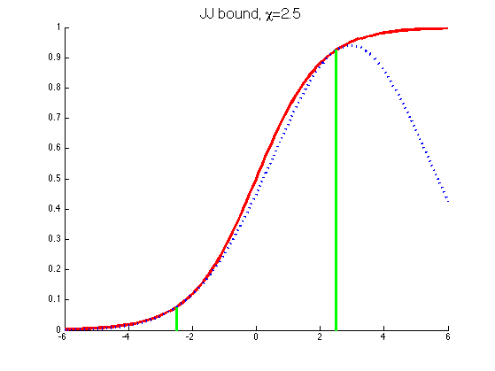
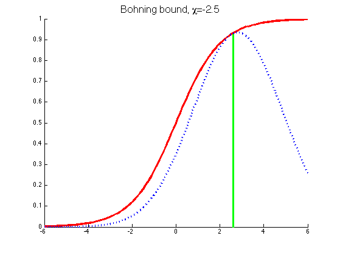

function sigmoidLowerBounds()
x = [-6:(1/10):6];
function sig = sigmoid(x)
sig = exp(x) ./ (1 + exp(x));
end
function lambda = lambda(xi)
lambda = 1/(2*xi) * (sigmoid(xi) - 1/2);
end
function out = siglowerJJ(xi, eta)
a= 2*lambda(xi);
b = -0.5;
c = -lambda(xi)*xi^2 - 0.5*xi + log(1+exp(xi));
neta = -eta;
bound = 0.5*a*neta.^2 - b*neta + c;
out = exp(-bound);
end
function out = siglowerB(xi, eta)
a= 0.25;
b = a*xi - sigmoid(xi);
c = 0.5*a*xi^2 - sigmoid(xi)*xi + log(1+exp(xi));
neta = -eta;
bound = 0.5*a*neta.^2 - b*neta + c;
out = exp(-bound);
end
xi = 2.5;
figure;
axis([-6 6 0 1]);
hold on;
plot(x,sigmoid(x), 'r','linewidth',3);
plot(x,siglowerJJ(xi,x),'b:','linewidth',3);
line([-xi,-xi],[0,sigmoid(-xi)],'color','green','linewidth',3);
line([xi,xi],[0,sigmoid(xi)],'color','green','linewidth',3);
hold off;
title(sprintf('JJ bound, %s=%3.1f', '\chi', xi), 'fontsize', 16)
xi = -2.5;
figure;
axis([-6 6 0 1]);
hold on;
plot(x,sigmoid(x), 'r','linewidth',3);
plot(x,siglowerB(xi,x),'b:','linewidth',3);
hold off;
title(sprintf('Bohning bound, %s=%3.1f', '\chi', xi), 'fontsize', 16)
line([2.6,2.6],[0,sigmoid(-xi)],'color','green','linewidth',3);
end
 